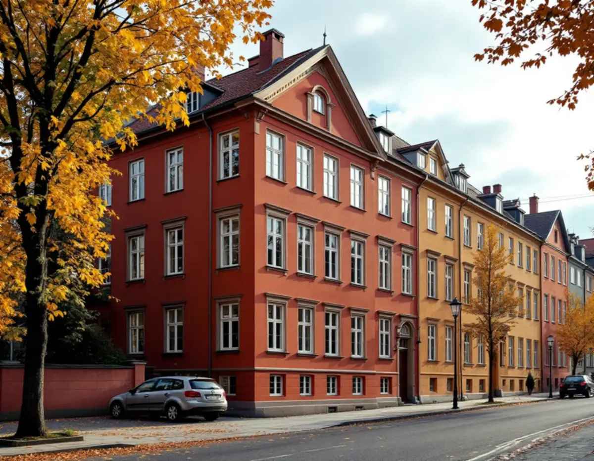
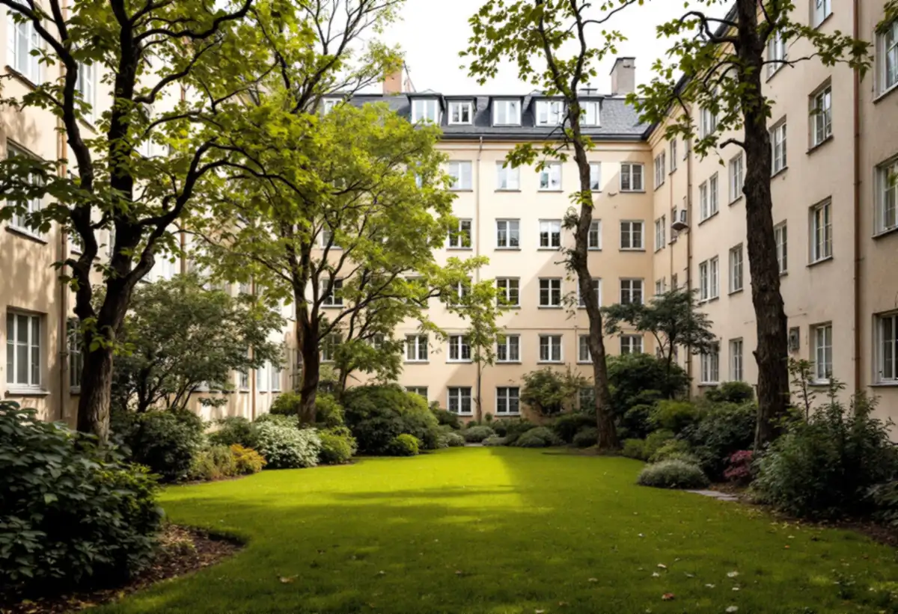
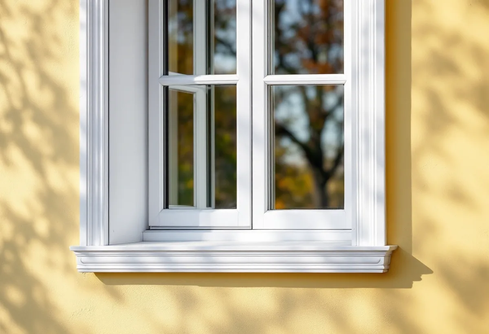

Husets status
Stadsmuseets karta, riksintresset och detaljplanen kontrolleras.

I Vasastan står några av innerstadens mest helgjutna kvarter från 1910- och 1920-talen, och där är fönstren en del av det som ska bevaras.
Beskriv jobbet kort.
Något blev fel. Kontrollera uppgifterna eller ring 08 12 410 276.
Vi tittar på jobbet på plats innan du får offert.
Du ser vad som ingår och vad det kostar.
Vi drar av ROT direkt och sköter ansökan.
Geal Entreprenad AB, Bromma. Org.nr 559303-7566.

Geal Entreprenad AB byter fönster åt bostadsrättsföreningar i Vasastan och börjar med att ta reda på vad huset är och vad som får ändras.
Stadens underlag om riksintressena pekar ut Röda Bergen som innerstadens största miljö som helt präglas av 1910- och 1920-talets stadsbyggnadsidéer. Husen följer terrängen, gatorna är vinklade och planen reglerade var prydnadsgavlar skulle finnas och att gårdarna skulle vara öppna och planterade. Kvarteren Motorn och Vingen i norra Vasastaden uppfördes i slutet av 1910-talet som ett tidigt exempel på kooperativt byggande med kommunalt stöd.
För storgårdskvarteren räknar underlaget den sammanhållna stadsbilden till de värdebärande karaktärsdragen, där proportioner, fasadindelning, taklandskap, färgsättning och ursprungliga byggnadselement såsom fönster, entréer och material bidrar till helheten. Staden skriver också att befintliga planer kan behöva kompletteras med hänsyn till de kulturhistoriska värdena.

Boverket har refererat två domar från Mark- och miljööverdomstolen, bland dem MÖD 2019:25, om fönsterbyten i två 20-talsklassicerande flerbostadshus. Fönstren var sidhängda före och efter och indelningen var densamma, men trä hade ersatts av aluminiumklätt trä, kulören var ändrad, profilerna i karm, båge och spröjs var kantigare, mittposterna grövre och fast spröjs hade ersatts av löstagbar. I ett av husen hade okopplade bågar blivit kopplade.
Domstolen ansåg att ändringarna knappt var märkbara från gatan och att de i de fallen inte krävde bygglov. Boverket påpekar att domarna bara säger att just de två bytena var lovfria, och att autenticitet, alltså ursprungligt material och detaljering, väger tungt inom kulturmiljövården. Listan visar ändå exakt vilka detaljer som granskas, och det är dem vi går igenom innan föreningen väljer fönster.
Stadsmuseets klassificeringskarta visar riksintressen med blå ring och klassificerade byggnader i blått, grönt, gult och grått. För en byggnad som är markerad blå eller grön, eller som ligger inom ett riksintresse, behöver du söka bygglov för åtgärder som annars kan vara lovfria. Streckade ytor är miljöer som ännu inte är inventerade.
Är föreningen osäker kan ni maila Stadsmuseet med adress, fastighetsbeteckning och stadsdel, byggnadsår, eventuella ombyggnader och foton av fasaderna. Museet brukar svara inom tre veckor efter att det har fått alla uppgifter. Som byggherre ansvarar föreningen själv för att ta reda på vad som gäller för fastigheten.
Enligt stadens områdesfakta för 2025 finns 8 985 bostadsrätter i flerbostadshus i Västra Matteus, 5 693 i Gustav Vasa och 5 586 i Östra Matteus. Ett fönsterbyte är därför i regel ett beslut för en förening, och bostadsrättslagen kräver styrelsens tillstånd för en väsentlig förändring av en lägenhet och för varje åtgärd som påverkar ett kulturhistoriskt värde i lägenheten.
Vi mäter upp de befintliga fönstren, ritar de nya med samma profiler och indelning och tar fram fasad- och detaljritningar till ansökan. Om bågarna i stället kan renoveras kan du läsa om fönsterrenovering i Vasastan, och om tjänsten i stort under fönsterbyte.
I båda målen som Boverket refererar hade fastighetsägaren redan bytt fönstren, och kommunen hade avslagit ansökningarna om bygglov i efterhand. Ärendet gick sedan via länsstyrelsen och mark- och miljödomstolen till Mark- och miljööverdomstolen. Det är en lång väg att gå med fönster som redan sitter i fasaden.
Stockholms stad påminner om att du inte får börja med det du sökt lov för innan du har fått startbesked, och att du får använda det du byggt först när du har fått slutbesked. Nya öppningar kan dessutom påverka byggnadens bärande konstruktion och behöva förstärkas, och en planritning behövs när fönster och dörrar flyttas eller nya installeras. Vi lägger därför in lovet i tidplanen från början.
Stadsmuseets karta, riksintresset och detaljplanen kontrolleras.
Fönster, profiler, beslag och indelning dokumenteras på gata och gård.
Tillverkning, montage och efterarbete står var för sig.
Fasad- och detaljritningar, kulörer och foton tas fram.
Fönstren byts i etapper så att lägenheterna kan bo kvar.
Vi går igenom fönstren med styrelsen.
Skatteverket ger inget rotavdrag för att byta fönster i en bostadsrätt, och inte heller för arbete mellan eller på utsidan av befintliga fönster. Avdrag ges för arbete på insidan, till exempel nytt glas i den inre bågen eller tätningslist, när du ansvarar för det enligt stadgarna.
Arbetet ska utföras innanför bostadens tak, väggar och golv. Avdraget är högst 30 procent av arbetskostnaden, och material och resor ger inget avdrag.
Antal fönster, om gatu- och gårdsfasaderna har olika fönstertyper, profiler och spröjs, glas och beslag, ställning och om bygglovshandlingar behövs. Efter ett gratis platsbesök får föreningen ett skriftligt kostnadsförslag.
Byta eller renovera fönster.
Fönsterbyte i Stockholm →Takbyte, takbesiktning och plåtarbeten.
Takläggare i Vasastan →Stenstad, Röda Bergen och föreningarnas tak.
Takrenovering i Vasastan →Flytta badrummet, ny stam och frånluft.
Badrumsrenovering i Vasastan →När en lokal blir bostad.
Byggföretag i Vasastan →Fasadmålning för föreningar.
Fasadmålning i Vasastan →Ställning, tillstånd och etablering på gatan.
Fasadrenovering i Vasastan →Fönster i Birkastadens jugendhus.
Fönsterrenovering i Vasastan →Springor, kupning och underhåll.
Golvläggare i Vasastan →Stav- och fiskbensparkett.
Golvslipning i Vasastan →Kokvrån som blir kök.
Köksrenovering i Vasastan →Snickerier, fönster och sprucket spackel.
Målare i Vasastan →Takfönster, vindar och plåt.
Plåtslagare i Vasastan →Öppna upp, nya dörröppningar och listverk.
Snickare i Vasastan →Takbyte för föreningar och fastighetsägare.
Takbyte i Vasastan →Ny tapet på gamla putsväggar.
Tapetsering i Vasastan →Hela lägenheten, med husets värden kvar.
Totalrenovering i Vasastan →Eller ring 08 12 410 276, mån–fre 08–17.
Beskriv jobbet kort.
Något blev fel. Kontrollera uppgifterna eller ring 08 12 410 276.